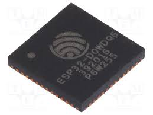

ESP32でデュアルコアを使おう！
Tweet
概要
ESP32とは

ESP32 Overview | Espressif Systems
ESP32は上海の企業であるEspressif Systemsから発売されているWiFi&Bluetoothモジュールです．同時にgccで開発できるマイコンでもあります．
ESP-WROOM-32という700円ほどの無線モジュールの中に入っているマイコンがESP32です．
デュアルコア
実はこのマイコン，かなりスペックが高く，CPUがデュアルコアなんです！
今回はその使い方を簡単に紹介します．
RTOS (リアルタイムオペレーティングシステム)
RTOSとは
さまざまな機能を持つアプリケーションを動かそうとするとき，OSを欠かすことはできません．その中でもリアルタイムOSはその名の通りリアルタイム性に優れており，ハードウェアのイベントに従って高速に処理をすることができます．
簡単に言うと，関数を1つのタスクと考え，OSに関数ポインタを渡しておくと，疑似的に同時並行で関数を実行してくれます．
FreeRTOS

ESP32の中ではFreeRTOSというリアルタイムOSが動いています．
FreeRTOSは，オープンソースのRTOSの1つで，さまざまなアーキテクチャに対応しています．オープンソースのRTOSの中では最も有名なものと言えるでしょう．
ESP32の使われているFreeRTOS
デュアルコアのためかわかりませんが，ESP32に使われているFreeRTOSは，ESP32用にカスタマイズされているみたいです．ただ，使い方はほとんど同じです．
デュアルコアの使い方
使い方はとても簡単です．
普段FreeRTOSでタスクを作成するときは
BaseType_t xTaskCreate(
TaskFunction_t pxTaskCode, //< タスクの関数ポインタ
const char * const pcName, //< タスク名
const uint16_t usStackDepth, //< タスクのスタックサイズ
void * const pvParameters, //< タスク関数に渡す引数
UBaseType_t uxPriority, //< タスクの優先度
TaskHandle_t * const pxCreatedTask, //< タスクのハンドル
);
という関数を使いますが，代わりに
BaseType_t xTaskCreatePinnedToCore(
TaskFunction_t pxTaskCode, //< タスクの関数ポインタ
const char * const pcName, //< タスク名
const uint16_t usStackDepth, //< タスクのスタックサイズ
void * const pvParameters, //< タスク関数に渡す引数
UBaseType_t uxPriority, //< タスクの優先度
TaskHandle_t * const pxCreatedTask, //< タスクのハンドル
const BaseType_t xCoreID //< コア番号
);
という関数を使い，引数の最後に使用するCPUのコア番号を指定します．
つまり，どのCPUで実行するかというのはユーザーが選択する訳です．
ESP32の場合，コアは2つなので，コア番号は0か1になります．
サンプルコード
Arduino core for ESP32環境でのサンプルコードです．
※Arduino IDEのBoard設定でCore Debug Levelをinfoにしないとログは見えません．
#include "esp32-hal-log.h"
#include "freertos/task.h"
void task0(void* arg) {
while (1) {
log_i("This is Core 0");
delay(1000);
}
}
void task1(void* arg) {
while (1) {
log_i("This is Core 1");
delay(1500);
}
}
void setup() {
log_i("Hello, this is ESP32:)");
xTaskCreatePinnedToCore(task0, "Task0", 4096, NULL, 1, NULL, 0);
xTaskCreatePinnedToCore(task1, "Task1", 4096, NULL, 1, NULL, 1);
}
void loop() {
}
ちなみに
ちなみに，Arduino core for ESP32のmain.cppでは，
#if CONFIG_FREERTOS_UNICORE
#define ARDUINO_RUNNING_CORE 0
#else
#define ARDUINO_RUNNING_CORE 1
#endif
void loopTask(void *pvParameters)
{
setup();
for(;;) {
micros(); //update overflow
loop();
}
}
extern "C" void app_main()
{
initArduino();
xTaskCreatePinnedToCore(loopTask, "loopTask", 4096, NULL, 1, NULL, ARDUINO_RUNNING_CORE);
}
こう書かれているので，いつも使っているsetup()とloop()は優先度が1のタスクであることがわかります．
さらに，CONFIG_FREERTOS_UNICOREはfalseなので，このタスクを実行するコアはCPU1であることがわかります．
おそらくOSなどのシステムタスクはCPU0で行っていて，ユーザーアプリケーションタスクをCPU1で行うという位置づけなのでしょう．実際に各CPUには名前がついていて，Process CPUとApplication CPUとなっています．
まとめ
ついに電子工作の世界にデュアルコアがやって参りましたね！
デュアルコアを使うためにはRTOSは必須だと思うのでしっかり勉強していきたいです．
一度デュアルコア用のコードを書けるようになっておけば，将来クアッドコアやオタクコアのマイコンが登場してもすぐに適応することができます．
実は，ESP32にはUltra Low Power Coprocessorという8MHzで動くCPUがもう一つ入っています．そちらもこれから使い方を勉強していきたいと思うので，収穫があったら紹介したいと思います．
こんなにすごいマイコンですが，ESP-WROOM-32はたった700円です．
ESP32の性能を最大限に使っていきましょう！
参考リンク
前の記事